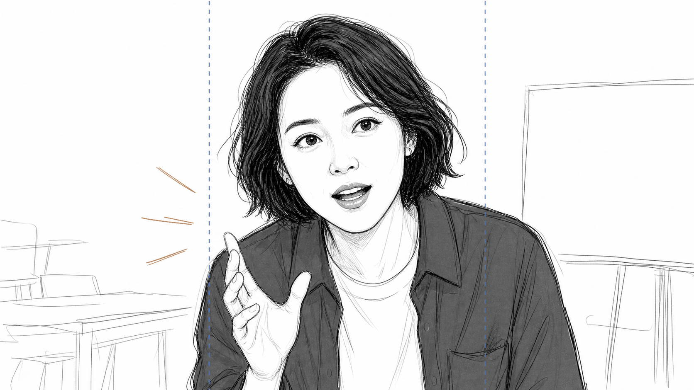
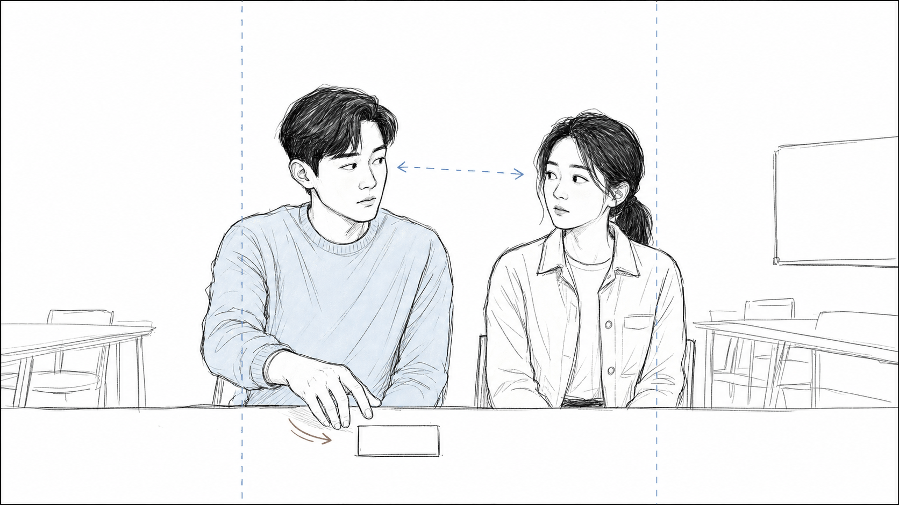
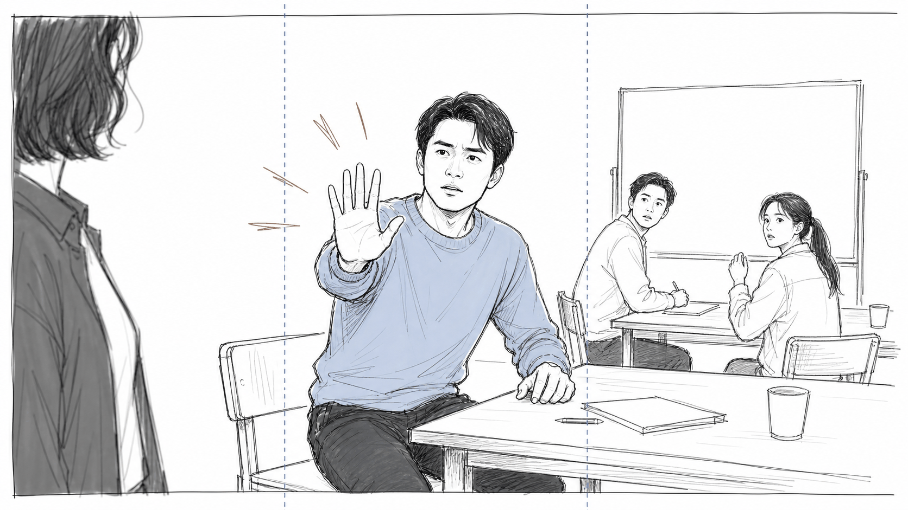
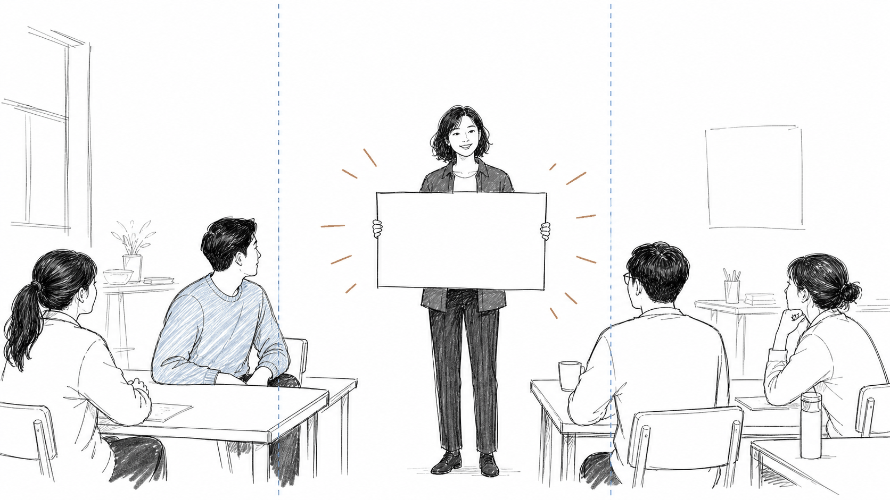

홍보 영상 스토리보드 예시
구성: 단편 서사형 촬영 콘티, 4컷, 12초
등장인물: 진행자, 참가자 가, 참가자 나, 참가자들
촬영 기준: 16:9로 촬영하되 주요 얼굴과 소품은 중앙 9:16 영역 안에 배치한다.
촬영 기준: 상단 고정 제목은 사용하지 않는다.
촬영 기준: 그림 안에는 반드시 읽혀야 하는 문구를 넣지 않는다.
화면 구성 가이드

검은 외곽선: 가로형으로 촬영되는 전체 16:9 화면입니다.
파란 세로 점선 사이: 세로형으로 잘라도 남는 중앙 9:16 안전 영역입니다.
점선 바깥 좌우 영역: 가로형에서는 보이지만 세로형 변환 시 잘릴 수 있습니다.
주요 얼굴과 손동작, 핵심 소품은 파란 점선 사이에 배치합니다.
홍보 영상 스토리보드 예시
1 쪽
| 컷 | 그림 | 설명 | 길이 |
|---|---|---|---|
| 100:00 00:03 |
행동 메모
장면명: 도입 대사
화면: 인물 근접 화면
동작: 진행자가 모임을 향해 상체를 살짝 기울이며 첫 대사를 건넨다.
세로 전환: 진행자의 눈과 입이 중앙 세로 영역 안에 들어오도록 한다.
대사
진행자: 이제 시작할 준비가 됐습니다.
효과음
낮게 긴장감을 주는 음악이 시작된다.
|
3초 | |
| 200:03 00:06 |
 |
행동 메모
장면명: 눈빛 교환
화면: 두 사람 반응 화면
동작: 참가자 가와 참가자 나가 말없이 서로 눈치를 본다. 참가자 가는 빈 소품 쪽으로 손을 뻗는다.
세로 전환: 두 사람의 얼굴과 뻗은 손이 중앙 영역 안에 들어오도록 한다.
대사
대사 없음.
효과음
잔잔한 실내 배경음이 이어진다.
|
3초 |
| 300:06 00:09 |
 |
행동 메모
장면명: 움직임 제지
화면: 중간 거리 화면
동작: 참가자 가가 자리에서 반쯤 일어나 한쪽 손바닥을 내밀며 모두의 움직임을 멈춘다.
세로 전환: 참가자 가의 얼굴과 내민 손을 세로 자르기 안내선 사이에 둔다.
대사
참가자 가: 잠깐만요.
효과음
음악이 갑자기 끊긴다.
|
3초 |
| 400:09 00:12 |
 |
행동 메모
장면명: 안내판 공개
화면: 넓은 화면
동작: 진행자가 빈 안내판을 들어 올리자 참가자들이 움직임을 멈추고 안내판을 바라본다.
세로 전환: 진행자와 안내판, 참가자 가와 주요 반응 인물을 화면 중앙 가까이에 둔다.
대사
대사 없음.
효과음
짧은 강조음 뒤에 정적이 흐른다.
|
3초 |